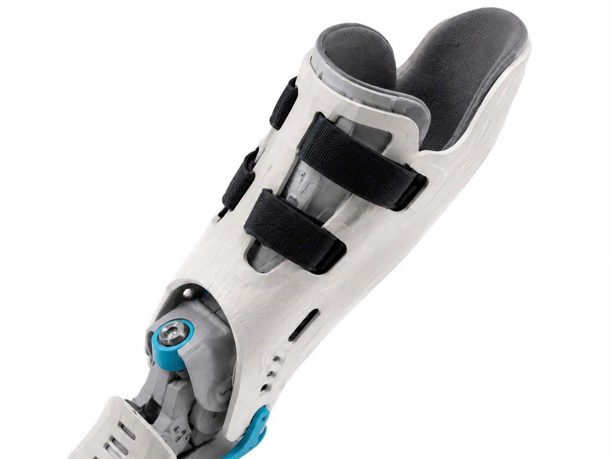
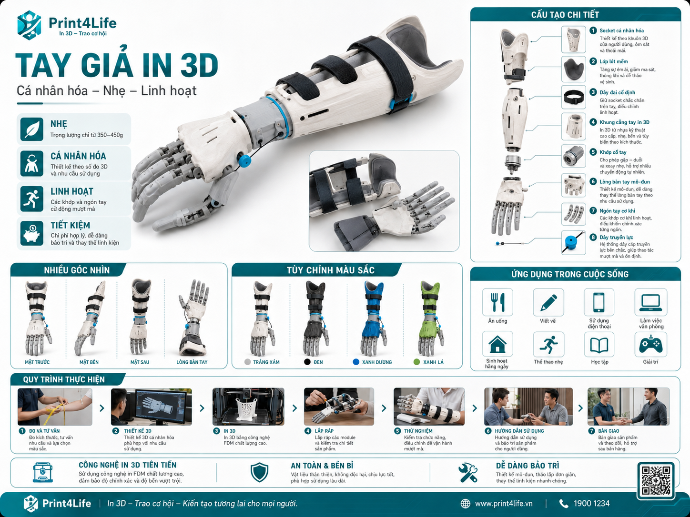
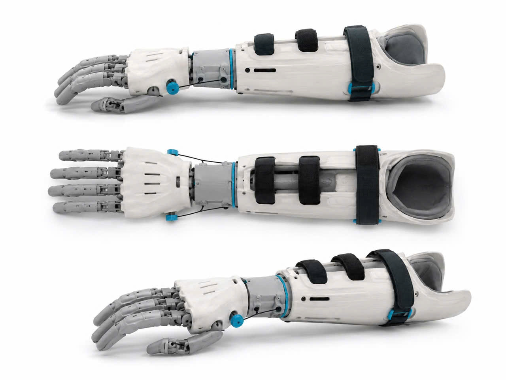
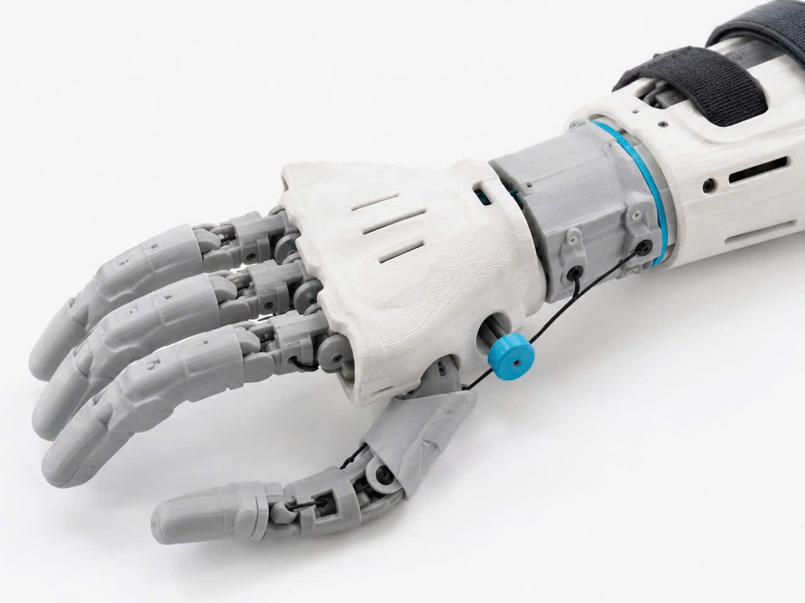
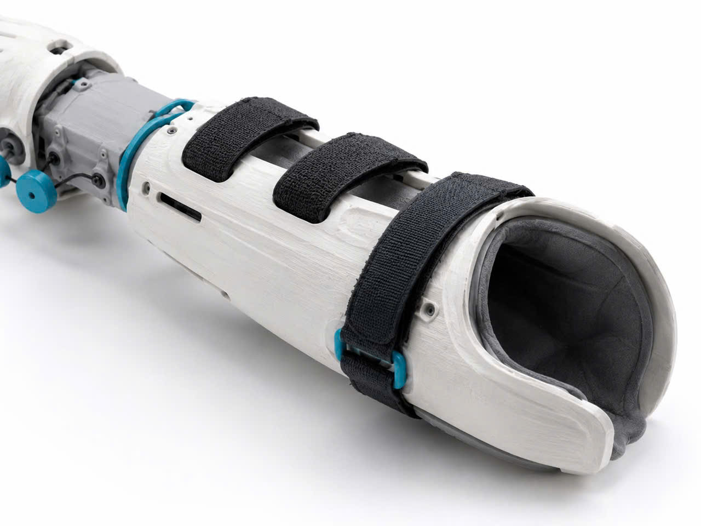
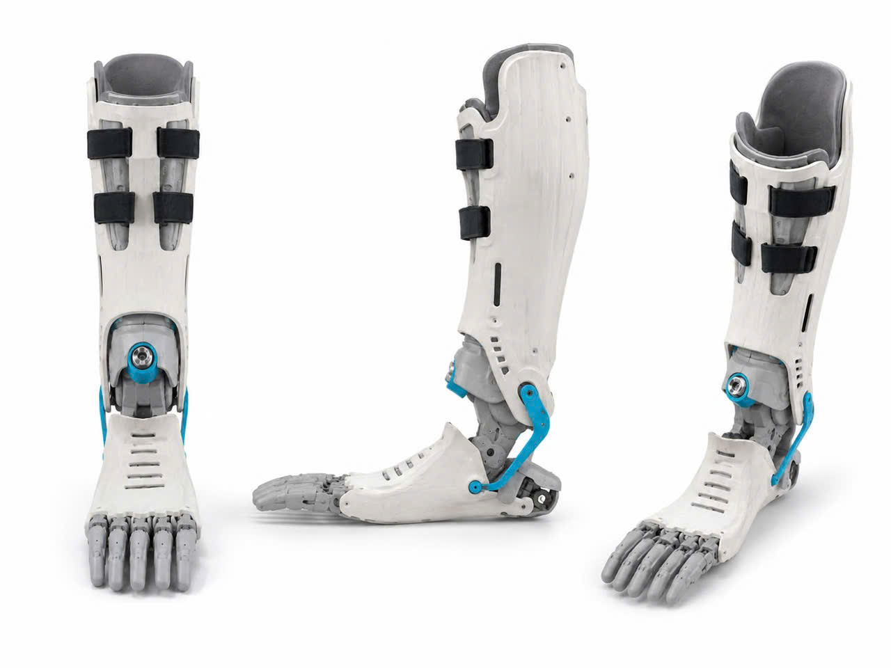
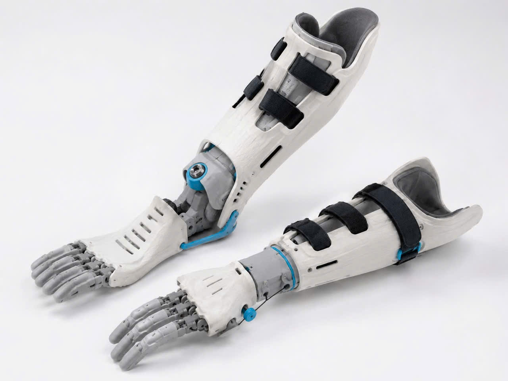
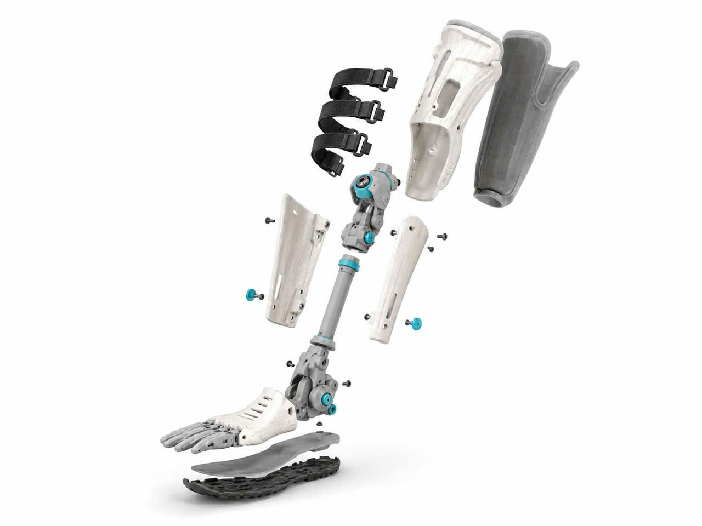

In công nghệ
Ứng dụng thiết kế số, CAD 3D và in 3D để tạo ra chi giả mô-đun, dễ tinh chỉnh.
Dự án công nghệ y sinh ứng dụng in 3D
Print4Life phát triển giải pháp chi giả cẳng tay - bàn tay bằng công nghệ in 3D, hướng đến thiết kế nhẹ, bền, thẩm mỹ, dễ thay thế linh kiện và phù hợp với từng người dùng.
01 / Print4Life là gì?
Print4Life không chỉ là một thiết bị hỗ trợ, mà là một giải pháp chi giả thế hệ mới kết hợp giữa công nghệ in 3D, thiết kế cá nhân hóa và giá trị nhân văn. Dự án hướng đến việc giúp người khuyết chi tiếp cận chi giả phù hợp hơn với cơ thể, nhu cầu sử dụng và điều kiện kinh tế.

Print = công nghệ in 3D, thiết kế số và sản xuất bồi đắp.
4Life = for life, vì cuộc sống và cơ hội hòa nhập.
Ứng dụng thiết kế số, CAD 3D và in 3D để tạo ra chi giả mô-đun, dễ tinh chỉnh.
Hỗ trợ người khuyết chi tự tin hơn trong sinh hoạt, học tập và lao động.
Thiết kế theo kích thước, nhu cầu và phong cách của từng người dùng.
02 / Vấn đề
Nhiều người dùng vẫn gặp khó khăn về chi phí, thời gian chờ, độ vừa vặn và tính thẩm mỹ khi tiếp cận chi giả.
Chi giả truyền thống thường có giá thành lớn, gây khó khăn cho học sinh, sinh viên và người lao động phổ thông.
Quy trình đo, thiết kế, đặt hàng và lắp ráp có thể kéo dài, làm giảm khả năng tiếp cận nhanh của người dùng.
Mỗi người có cấu trúc cơ thể khác nhau, nhưng nhiều sản phẩm chưa tối ưu theo kích thước và nhu cầu sử dụng riêng.
03 / Trụ cột sản phẩm
Sản phẩm được phát triển quanh các tiêu chí cốt lõi: vừa vặn, nhanh, nhẹ, mô-đun và có thẩm mỹ hiện đại.
Thiết kế socket và cấu trúc chi giả theo kích thước cẳng tay, nhu cầu sử dụng và phong cách cá nhân.
Quy trình thiết kế 3D, tạo mẫu nhanh và tinh chỉnh linh hoạt giúp rút ngắn thời gian phát triển sản phẩm.
Ứng dụng vật liệu in 3D giúp tối ưu trọng lượng, giảm cảm giác nặng nề khi sử dụng.
Các bộ phận như socket, vỏ cẳng tay, khớp cổ tay, lòng bàn tay, ngón cơ khí, dây tendon và đai Velcro có thể tháo lắp, thay thế riêng.
Thiết kế màu trắng/xám, điểm nhấn xanh dương, phong cách công nghệ y tế cao cấp.
04 / Giải pháp
Print4Life sử dụng quy trình thiết kế số và in 3D để tạo ra chi giả gồm các bộ phận có thể tháo lắp, thay thế và nâng cấp riêng lẻ. Cách tiếp cận này giúp giảm chi phí, rút ngắn thời gian sản xuất và tăng khả năng tùy chỉnh theo từng người dùng.
Hình ảnh và nội dung sản phẩm

Infographic trình bày cách Print4Life kết hợp socket, khung cẳng tay, bàn tay cơ khí và hệ dây truyền động thành một giải pháp chi giả mô-đun.

Thiết kế có thể tinh chỉnh theo số đo, thói quen sử dụng và phong cách của từng người, giúp sản phẩm vừa vặn hơn khi thử nghiệm thực tế.

Các ngón tay, chốt trục và tendon cable được bố trí để mô phỏng chuyển động cơ bản, đồng thời vẫn giữ khả năng tháo lắp và thay thế linh kiện.

Các vùng tiếp xúc, đai cố định và phần vỏ được thiết kế để dễ kiểm tra, bảo trì và thay linh kiện mà không cần làm lại toàn bộ sản phẩm.
05 / Giới thiệu thiết kế
Print4Life khai thác video 3D Exploded View để giới thiệu cách các bộ phận của chi giả được tách lớp, lắp ghép và tối ưu theo từng người dùng. Từ socket ôm cẳng tay đến bàn tay cơ khí nhiều đốt, mỗi chi tiết đều hướng tới sự vừa vặn, bền nhẹ và dễ thay thế.
Vùng tiếp xúc được thiết kế theo kích thước cẳng tay, có lớp lót mềm và đai Velcro cố định.
Vỏ cẳng tay, khớp cổ tay và connector được tổ chức theo mô-đun để bảo trì nhanh hơn.
Hệ ngón tay, chốt trục và tendon cable hỗ trợ mô phỏng chuyển động cơ bản của bàn tay.
06 / Công nghệ
Print4Life kết hợp dữ liệu đo cá nhân, thiết kế cơ khí số và sản xuất bồi đắp để tạo ra sản phẩm có thể thử nghiệm, cải tiến và bảo trì linh hoạt.
Thu thập kích thước và hình dạng cẳng tay để tạo thiết kế cá nhân hóa.
Mô hình hóa socket, vỏ ngoài, khớp cổ tay, lòng bàn tay và các chi tiết cơ khí.
Tạo mẫu nhanh, tối ưu chi phí, dễ thử nghiệm và cải tiến qua nhiều phiên bản.
Lắp ráp theo mô-đun, giúp thay thế, bảo trì và nâng cấp linh kiện dễ dàng.

Thiết kế tổng thể
Mẫu chi giả được phát triển theo ngôn ngữ trắng/xám với điểm nhấn xanh dương, tạo cảm giác y tế hiện đại nhưng vẫn gần gũi khi người dùng mang hằng ngày.

Tùy biến phiên bản
Cùng một cấu trúc mô-đun có thể được tinh chỉnh theo kích thước, màu sắc và mức độ chức năng khác nhau, phù hợp với cách một startup kiểm thử sản phẩm qua nhiều phiên bản.

Tư duy lắp ráp
Hình ảnh dạng exploded view giúp nhà đầu tư, đối tác giáo dục hoặc đơn vị y tế nhanh chóng hiểu sản phẩm gồm những cụm linh kiện nào và vì sao có thể bảo trì riêng lẻ.
07 / Business Model Canvas
Mô hình tập trung vào khả năng tiếp cận, cá nhân hóa sản phẩm và triển khai tại khu vực đô thị như Tân Phú, Tân Bình, Bình Tân.
Bệnh viện, phòng khám chỉnh hình, trường học, xưởng in 3D, tổ chức xã hội.
Đo số, thiết kế 3D, in 3D, lắp ráp, thử nghiệm, bảo trì và cải tiến sản phẩm.
Chi giả nhẹ, cá nhân hóa, chi phí tối ưu, thẩm mỹ tốt, dễ thay linh kiện.
Tư vấn trực tiếp, hỗ trợ sau bàn giao, bảo trì định kỳ, đồng hành điều chỉnh.
Người cần chi giả, học sinh, sinh viên, người lao động, trung tâm phục hồi chức năng.
Đội thiết kế, máy in 3D, vật liệu, dữ liệu số đo, quy trình kiểm thử.
Website, mạng xã hội, trường học, bệnh viện, hội nhóm cộng đồng, workshop.
Vật liệu in, máy móc, thiết kế, nhân sự, thử nghiệm, marketing và bảo trì.
Bán sản phẩm, gói bảo trì, thay linh kiện, tài trợ xã hội và hợp tác tổ chức.
08 / Đối tượng phù hợp
Dự án phù hợp với những người dùng và tổ chức cần giải pháp chi giả thực tế, dễ tiếp cận và có thể cá nhân hóa theo từng bối cảnh sử dụng.
Hướng đến người cần chi giả nhẹ, dễ sử dụng và có chi phí hợp lý.
Phù hợp với nhóm cần giải pháp thực tế, có thể bảo trì và thay thế linh kiện.
Phù hợp để triển khai thử nghiệm, nghiên cứu, workshop hoặc chương trình hỗ trợ xã hội.
09 / Chi phí dự kiến
Các mức chi phí dưới đây giúp hình dung quy mô thử nghiệm ban đầu của một sản phẩm startup, không phải mức bán cố định.
700.000đ - 1.200.000đ
1.500.000đ - 2.500.000đ
Theo phạm vi hợp tác
Chi phí thực tế phụ thuộc vào kích thước, vật liệu, số lần tinh chỉnh, mức độ chức năng và yêu cầu kiểm thử. Print4Life ưu tiên minh bạch chi phí để sản phẩm dễ tiếp cận hơn trong giai đoạn thử nghiệm.
10 / Tác động xã hội
Print4Life hướng đến việc giúp người khuyết chi tiếp cận chi giả với chi phí hợp lý hơn, thời gian sản xuất nhanh hơn và khả năng tùy chỉnh tốt hơn. Dự án kết hợp công nghệ in 3D, thiết kế mô-đun và tinh thần cộng đồng để tạo ra giá trị thực tế.
11 / Liên hệ
Liên hệ với nhóm phát triển để được tư vấn, khảo sát nhu cầu hoặc trao đổi về hợp tác thử nghiệm mô hình chi giả in 3D.
Dự án: Print4Life
Lĩnh vực: 3D Printed Prosthetics
Khu vực thử nghiệm: Tân Phú, Tân Bình, Bình Tân, TP.HCM
Email: contact@print4life.vn